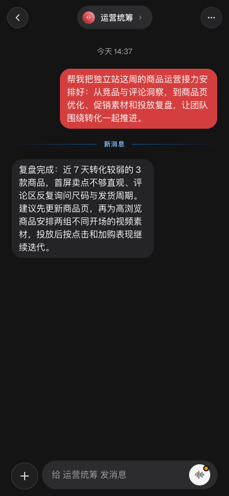

从资料到可用方案
搜集研究信息、摘要重点、整理商品页文案、内容脚本、项目说明和复盘。
少花时间归拢，早点开始判断一项工作，多种成果
先把信息和目标理清，再按需要继续写、画、剪、配乐。成果保留在工作空间里，团队可以检查、修改，也可以交给下一位 Bot 继续推进。
搜集研究信息、摘要重点、整理商品页文案、内容脚本、项目说明和复盘。
少花时间归拢，早点开始判断为商品上新、社媒封面、广告测试准备不同表达方向的图片素材。
让创意更快进入评审整理卖点、分镜和素材，生成视频片段，也能将素材粗剪并配上字幕。
一次准备多个创意切口围绕广告、短视频或节目主题制作配乐与歌曲，让画面和声音一起交付。
少在工具之间反复搬运扩展是团队工作的一部分
DoneBot 可以在你常用的邮箱、文档、表格、项目管理、电商和社交工具之间搜集资料、更新进度、整理成果。扩展不是孤立的功能列表，而是让 Bot 团队能在真实工作里接力。
云端 × 手机
云端工作空间里的 Bot 可以持续在线。你在手机上查看任务进度、继续对话或处理待确认事项，成果会回到原来的工作脉络。
云端工作空间可以独立于本机运行，周期任务和进行中的工作继续推进。
iOS 和 Android 手机查看 Bot 对话、任务结果与需要你决定的事项。
本地 Bot 仍由你的电脑运行；使用本地工作空间时，电脑需要保持运行。

桌面端下载
选择与你的设备匹配的版本。官网入口始终提供最新版，客户端也可以检查更新；手机端支持 iOS 与 Android。